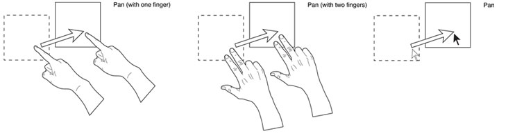

Tests for Pan Manipulations

- Pan should work with single finger
- Pan should work with 2 fingers
- Pan should work with mouse dragging
- Panning should trigger manipulate:update events
- Scrolling the page on touch devise should be possible
- Text selection on other elements should be possible
- If two fingers are used to drag, the panning should be relative to the mid point between those two touches.